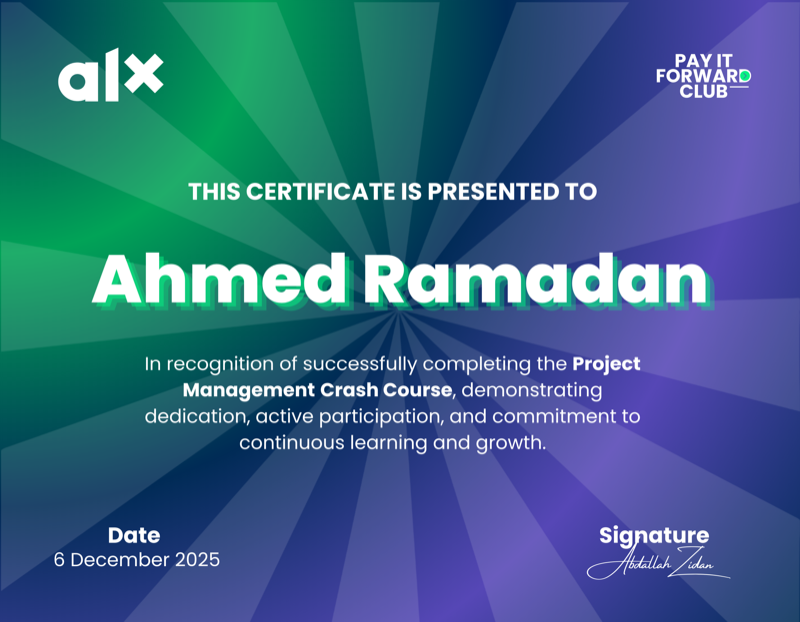
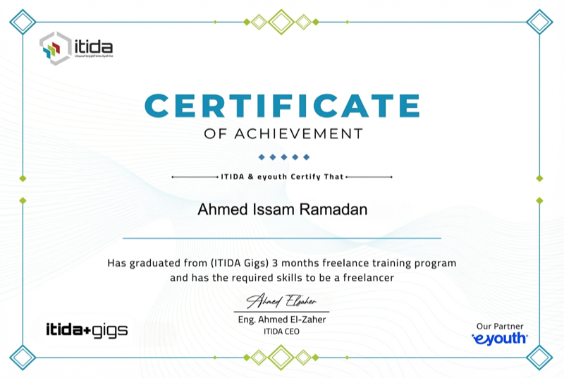

My path to AI wasn't a straight line.
That's exactly why
it works.
I didn't arrive at AI systems through a computer-science degree or a corporate ladder. I arrived through more than a decade of working inside real businesses — taking machines apart, selling face-to-face, running operations, and watching how organizations actually succeed or fall apart. That's the foundation every system I build stands on.
Verified Contacts
- 📧 ahmedissamramadan@gmail.com
- 💬 WhatsApp: +201501656010
- 📍 Cairo, Egypt (Available Remote)
Schools of Life
Every phase was a system to decode, leading to practical AI architecture.
It started with how things work
My first work was hands-on and technical: dismantling, repairing, configuring, and experimenting with hardware and software until I understood how systems function from the inside out. Since software back then was a black box with no manuals, I had to figure it out myself.
This self-reliance allows me to absorb new technology faster than the market curve, ensuring your systems stay current as better AI tools emerge.
Then it became about people
From there I moved into direct, customer-facing work, interacting with hundreds of people every day. Under real commercial pressure, I learned active listening and how decisions get made in the moment.
Because technology fails when it ignores the humans using it, I design workflows around how your customers and team actually behave, ensuring high adoption rates.
Then it became about systems
Operational ownership followed: managing inventory, pricing, supplier coordination, and cross-functional teams. Later, working inside international environments revealed how mature organizations coordinate finance, sales, HR, and operations.
Instead of bolting AI onto isolated tasks, I map how your entire business connects, building a system that strengthens the whole machine.
And then it became about fixing what's broken
In entrepreneurial environments, I saw how unclear ownership and broken processes drain company resources. Moving between marketing, operations, and tech taught me to see the whole board.
This translates into clear, documented infrastructure that remains highly reliable and self-sufficient, long after my initial consulting handoff.
What I Believe
Systems > Effort
Systems outperform individual effort. A good system keeps working when people are busy, tired, or gone.
Process Scales
Processes scale; improvisation doesn't. Documented workflows grow with you. Heroics don't.
People-Centric Tech
Understanding people matters as much as understanding technology. This is why most AI projects fail — and why mine don't.
Continuous Learning
Continuous learning compounds faster than narrow specialization. Your system is built by someone who adapts faster than the market changes.
Structured Operations
Sustainable businesses are built on structure, not short-term execution.
Proof of Learning
Listed as evidence of continuous skill acquisition and methodology upgrade.
HubSpot
Inbound Marketing

ALX Program
Tech & Leadership Cert

ITIDA / ITI
438-Hour Digital Marketing
National AI Ambassador
Egypt AI Ambassadors Program
Ready to build that system?
Across every environment, one pattern held: I was never satisfied just completing the task. I wanted to understand the system that produced it — and redesign it to work better. That instinct is what you get when you work with me: not a list of AI tools, but a system designed to make your business run better, measurably, and on its own.
Book a Free Diagnostic Call